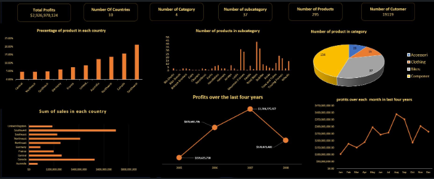
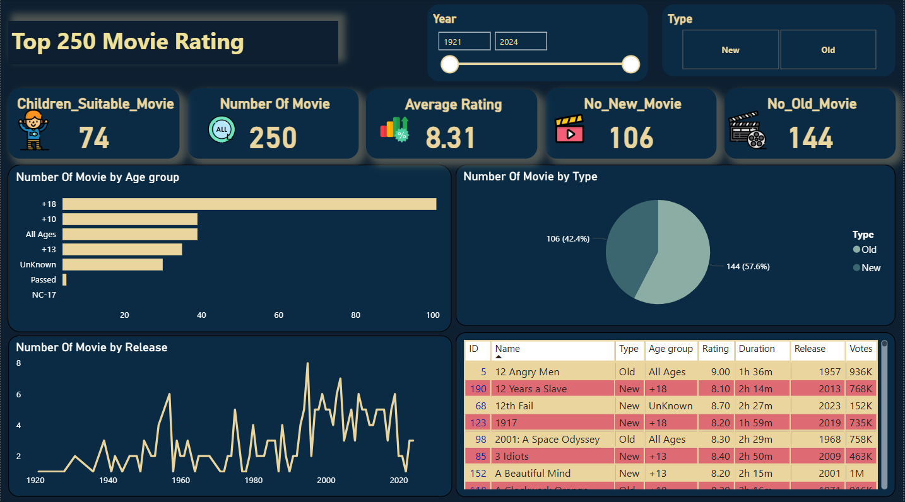
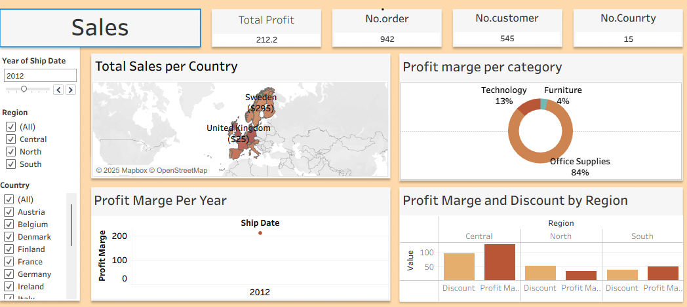

I have worked with large and complex datasets, utilizing Microsoft Excel's advanced data modeling, pivot reporting, power queries, and formulas to build highly interactive analytical dashboards.

Sales & Performance Dashboard
I designed an analytical dashboard to visualize product performance, sales, and profits across 10 countries over the past 4 years. The dashboard is built on accurate data and visual analysis to help decision-makers extract clear, actionable insights.
I designed an analytical dashboard that visualizes sales from 2011 to 2018, analyzing yearly growth rates, product category trends, and regional sales distribution.
An analysis of 200 Netflix titles revealing production trends, audience demand, and fresh opportunities from a whole new angle. Designed to extract catalog insights, genres, and release dynamics.
Utilizing advanced DAX queries, star schema data modeling, ETL data cleaning, and dynamic row-level security (RLS) within Microsoft Power BI Desktop to craft premium corporate reports.

Top 250 Movie Rating Analysis
I analyzed data for the top 250 highest-rated movies in history, highlighting correlations between genres, release years, directors, box office revenue, and IMDB audience ratings.
I worked on analyzing data from a marketing campaign for the Fitbit product, exploring key performance metrics like daily active users, calories burned, sleep metrics, and campaign ROI to uncover insights that support strategic decisions.
Product and territory insights showing top-performing regions, product categories, and key areas for growth and optimization. Leveraged geochart mappings and multi-slicing systems.
A health-focused analysis of 374 individuals exploring how age, gender, stress, activity, and profession impact sleep quality, resting heart rates, and physical habits.
Designing interactive storyboards and analytics workbooks in Tableau Public. Focus on high-speed rendering, calculated fields, and robust level of detail (LOD) expressions.

Sales Overview Dashboard
This dashboard provides a sales overview with region-wise comparisons, performance trends, seasonal distribution analysis, and dynamic customer segment groupings.